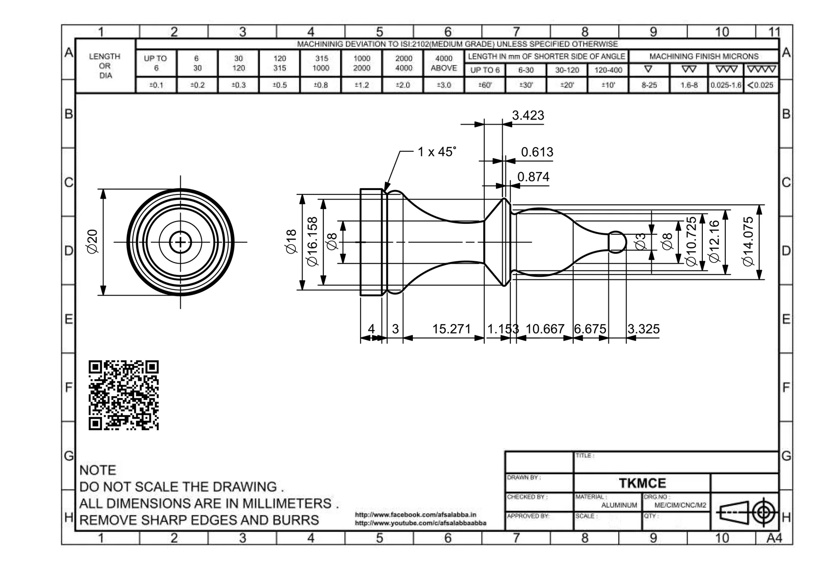

CNC Lathe Bishop
1st Year
A CNC turning workshop project demonstrating engineering drawing, 3D modelling, machining operations and CNC programming.
Study the drawing first, explore the interactive 3D model, understand the machining operations, examine the CNC program and watch the machining demonstration.
Engineering Drawing

3D Model
Loading 3D model…
Drag to rotate · Scroll or pinch to zoom · Right-drag or two fingers to pan
CNC Machining Operations
The Lathe Bishop is manufactured through a sequence of turning operations. The operations below give an overview of the machining process.
01. Stopper / Workpiece positioning
Tool: T4 D1 — Sleeve (Stopper)
Workpiece positioning / stopper setting02. Facing
Tool: T1 D1 — PCLNR 2020 K12
Constant RPM: G97 S1500 M03
Facing passes at Z0
Feed: F0.0503. Contouring / Profile Turning
Tool: T7 D1 — MVJNR 2020 K16
Constant surface speed: G96 S200 LIMS=1500
Spindle CW: M03
CYCLE95 stock-removal cycle
The contour is defined using AB:BC04. Parting / Cut-off
Tool: T3 D1 — CFIR 2020 K06
Constant RPM: G97 M03 S600
Feed: F0.1
Uses R1 variable and IF/GOTO loop for the parting sequence
CNC Turning Program
The CNC program contains the tool movements, cutting operations and machining instructions required to manufacture the Lathe Bishop.
N10
G75 X0 Z0
T4D1
G00 X0 Z0
M00
G75 X0 Z0
M01
N20
G75 X0 Z0
T1D1
G97 S1500 M03
M08
G00 X28 Z2
G01 X28 Z0 F0.05
G01 X-1 Z0
G00 X28 Z2
G75 X0 Z0
M01
N30
G75 X0 Z0
T7D1
G96 S200 LIMS=1500 M03
M08
G00 X28 Z2
CYCLE95( "AB:BC", 1.00000, 0.20000, 0.40000, 0.00000, 0.10000, 0.10000, 0.05000, 9, , ,)
G00 X28 Z2
G75 X0 Z0
M05
M09
M01
N40
G75 X0 Z0
T3D1
G97 S600 M03
M08
G00 X28 Z2
G00 X28 Z-54
R1=20
N1005
G01 X=R1 Z-54 F=0.1
G01 X=R1+0.5 Z-54
R1=R1-0.5
IF R1>=-1 GOTO N1005
IF R1<-1 GOTO N1006
N1006
G00 X28 Z-54
G00 X28 Z2
G75 X0 Z0
M09
M05
M30
AB:
G01 X0 Z0
G03 X3 Z-3.325 CR=2
G02 X8 Z-10 CR=10.324
G03 X10.724 Z-20.666 CR=10.324
G02 X12.160 Z-21.819 CR=.8
G01 X14.075 Z-21.819
G01 X16.158 Z-22.693
G03 X16.158 Z-23.306 CR=.4
G01 X8 Z-26.729
G02 X18 Z-42 CR=15.848
G03 X18 Z-45 CR=2
G01 X20 Z-46
G01 X20 Z-54
G01 X26 Z-54
BC: